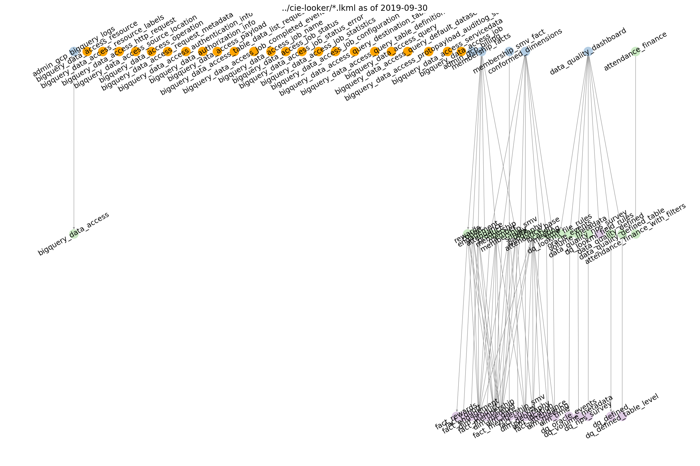
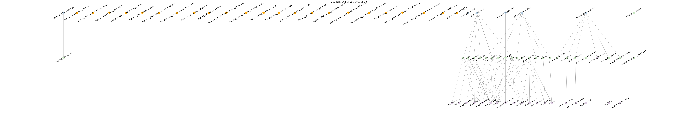

LookML Grapher¶
As part of this tool suite, we include a LookML grapher–a tool that shows a “network diagram” of the model - explore - view relationships. The code will also identify any orphans i.e. views not referenced by any models or explores.
For instance, in this output diagram

where the nodes are colored as follows:
models: blue
explores: green
views: purple
orphans: orange,
we can see that the membership_facts model has 5 explores. The first explore (engagement) references 4 views: fact_engagement, dim_product, dim_date, and dim_member. We can also see that there is one orphaned view (called orphan in this fake example).
Configuration¶
To run the grapher, run
python run_grapher.py --config config/grapher/config_grapher.json
where the config file has the following fields:
{
"infile_globs": [
"../somerepo/*.lkml"
],
"output": "graph.png",
"options": {
"node_size": 500,
"label_font_size": 18,
"text_angle": 30,
"image_width": 24,
"image_height" : 16,
"title": "My Amazing LookML"
}
}
Options, are, as you might suspect, optional.
Limitations¶
While this tool might create a network diagram for any valid lkml input repo, it is not guaranteed to be understandable or useful. YMMV. As the network gets large, overplotting of nodes can occur and makes them unreadable. Or, if your LookML is a mess and bunch of views and no models there won’t be any structure to see.
You may be able to fix some of these visualiztion issues by narrowing the file globs or you many need to modify the font size or image size. That is, the node_size and label_font_size are absolute, not relative, sizes. Thus, if you increase the image_width and/or image_height, you create a larger canvas and more space for the nodes.
For instance, you can change this overplotted image: 
to this more spaced out one:

just by increasing image_width.
Animation¶
I thought that it could be fun to see a repository over time. Thus, lookml-tools includes the ability to create an animated gif.

To do this, you will need a normal grapher config file, such as
{
"infile_globs": [
"../somerepo/*.lkml"
],
"options": {
"node_size": 500,
"label_font_size": 18,
"text_angle": 30,
"image_width": 24,
"image_height" : 16
}
}
(The output field is not required here.)
Then, you run:
python run_graph_animator.py
--config config.json
--path_to_repo ../somerepo
--image_directory myimages
--gif_filename movie.gif
It will create a set of images, one per commmit, in the image_directory (creating this directory if it does not exist) and output a GIF to gif_filename.
Note, if your image_width and image_height are large, creating the GIF will take some time (many minutes) and the file can be large (GBs rather than MBs).